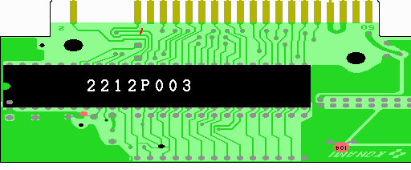
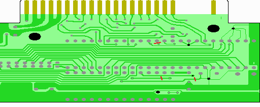

５．CUT&SHORT

表面は1ヶ所。カッターで実体図に赤の斜線で示した部分のパターンをカットします。
勢い余って隣のパターンを切らない様に注意します。

裏面は3ヶ所。カッターで実体図に赤の斜線で示した部分のパターンをカットします。
ここで、カットした部分はテスター等できちんとチェックしておきましょう。
Pカッター等があると若干作業しやすいですが、わざわざ買うほどの物ではありません。
次へ

 次へ
次へ